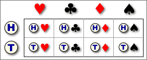
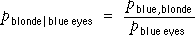
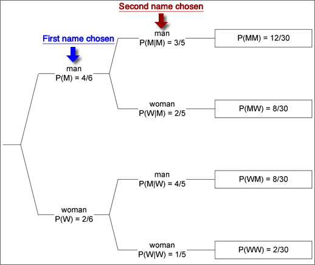

If you don't want to print now,
Descriptive and inferential statistics
Data sets can be summarised with graphs, tables and summary statistics, methods that are collectively called descriptive statistics.
We are often interested in some population of values but cannot obtain information about all values because of cost or other practical constraints. Data are collected from a sample of individuals and are used to throw light on the characteristics of the underlying population. Using sample information to find information about a population is called inferential statistics.
Samples are usually random — different values would be recorded if a new sample was taken from the population — and the resulting uncertainty about the conclusions that are drawn are described in terms of probability.
Definition of probability
If the different possible outcomes are equally likely, the probability of any event, A, is the proportion of outcomes that correspond to the event,

This definition can be used for many games of chance, but is also applicable to situations in which a single value is sampled from a finite population of N distinct values.
Long-term proportion
In many random situations, there are no equally likely outcomes, so the 'classical' definition of probability must be generalised. In these situations, we define the probability of an event to be the 'long-term' proportion of times that the event would occur if similar data were repeatedly collected.

The equivalence of this definition to the one on the previous page is called the law of large numbers.
Empirical probability
Defining the probability of an event as the limiting proportion of times the event occurs when more and more data are collected is not a practical way to determine its value. In practice, we must estimate such probabilities from a finite number of repetitions, giving an empirical probability.
We can use empirical probabilities in a similar way to exact theoretical probabilities.
Subjective probability
If it is difficult to imagine repeatedly collecting similar data, the earlier definitions cannot be used. Any definition of probability for such situations involves some personal judgement and is therefore called a subjective probability.
Different people are likely to allocate different values for subjective probabilities, and they are not discussed further in this e-book.
Probability of getting one of several values
Many populations contain values that occur more than once. When sampling from any population,
The probability that a single sampled value is either x, y, ... is the proportion of population values that are either x, y, ... .
If the values are numerical, this definition gives the probability of getting a value within some range. If the symbol X is used for the value that is sampled,
Prob( a < X < b ) = propn of values between a and b.
For any events, A and B, the following properties always hold.
Probabilities are always between 0 and 1
0 ≤ P(A) ≤ 1
Meaning of probabilities 0 and 1
If the event A cannot happen then P(A) = 0
If the event A is certain to happen then P(A) = 1
Probability that an event does not happen
P(A does not happen) = 1 - P(A)
Addition law
When two events cannot happen together, they are said to be mutually exclusive. If A and B are mutually exclusive,
P(A or B) = P(A) + P(B)
If the events A and B are not mutually exclusive,
P(A or B) = P(A) + P(B) - P(A and B) < P(A) + P(B)
Independence
When sampling with replacement from a finite population, the choice of each value does not depend on the values previously selected. The successive values are then called independent. This also holds when sampling from an infinite population (distribution).
On the other hand, if sampling without replacement from a finite population, successive sample values are not independent since the second value selected cannot be the same as the first value, so knowing the first value affects the probabilities when the second value is selected.
Bivariate data
A sample of 686 tourists were classified by educational level and by whether they were 'information seekers' (who requested destination-specific literature from travel agents) or 'non-seekers':
| Information seeker? | |||
|---|---|---|---|
| Education | Yes | No | Total |
| Some high school | 013 | 027 | 40 |
| High school degree | 064 | 118 | 182 |
| Some college | 100 | 123 | 223 |
| College degree | 059 | 069 | 128 |
| Graduate degree | 067 | 046 | 113 |
| Total | 303 | 383 | 686 |
In this section, we will consider how to use probability to model the randomness of two variables such as:
X = educational level
Y = information seeker?
Joint probabilities
Bivariate categorical data can be modelled as a random sample from an underlying population of pairs of categorical values. The population proportion for each pair (x, y) is denoted by pxy and is called the joint probability for (x, y).
In games of chance, we can often work out the joint probabilities. For example, if a gambler draws a card from a shuffled deck and also tosses a coin, there are eight possible combinations,

Marginal counts and proportions
Although our main interest is usually on the relationship between two categorical variables, it can also be of interest to examine the overall distribution of each variable separately. These are called the marginal distributions of the two variables and are determined by the row and column totals of the contingency table.
| Variable X | ||||||
|---|---|---|---|---|---|---|
| Variable Y | X1 | X2 | X3 | X4 | Total | |
| Y1 | 002 | 003 | 057 | 06 | 68 | |
| Y2 | 052 | 170 | 163 | 17 | 402 | |
| Y3 | 156 | 125 | 061 | 06 | 348 | |
| Y4 | 220 | 083 | 039 | 04 | 346 | |
| Total | 430 | 381 | 320 | 33 | ||
The row and column totals correspond to the heights of the stacks in stacked bar charts. For example, the above row totals are the heights of the stacks in the following diagram.
 and
and 
Marginal probabilities
Since probabilities are population proportions, the same ideas can be applied to the joint probabilities of two random variables, X and Y, so the marginal probability, px , for a variable X is the proportion of (x, y) pairs in the population with X = x ,

etc.
Example
In the following example, the marginal probabilities for X are the row of totals under the table, and the marginal probabilities for Y are the column of totals on the right.
| Variable X | ||||
|---|---|---|---|---|
| Variable Y | X = A | X = B | X = C | Total |
| Y = 1 | 0.2576 | 0.1364 | 0.1212 | 0.5152 |
| Y = 2 | 0.0909 | 0.0758 | 0.0152 | 0.1818 |
| Y = 3 | 0.0455 | 0.0758 | 0.0606 | 0.1818 |
| Y = 4 | 0.0152 | 0.0303 | 0.0758 | 0.1212 |
| Total | 0.4091 | 0.3182 | 0.2727 | 1.0000 |
Conditional proportions
Consider hair colour (Y ) and eye colour (X ) in a group of teenagers. The proportion of teenagers who are blonde, conditional on blue eyes, is the proportion of blondes within the sub-population with blue eyes. The conditional proportion is most easily understood as the ratio of the numbers with (a) blue eyes and (b) both blonde hair and blue eyes.

However we can equivalently write the conditional proportion as the ratio of a joint and marginal proportion:

The general definition of the conditional proportions for Y given that the value of X is x therefore
Conditional probabilities for Y, given X = x
The same definition gives conditional probabilities for Y given that the value of X is x . They can be found by rescaling of that row of the table of joint probabilities (dividing by px) so that the row sums to 1.0.

Two sets of conditional probabilities
Conditional probabilities for X given that Y has the value y are defined in a similar way:

You should be careful to distinguish between px | y and py | x.
The probability of being pregnant, given that a randomly selected person is female would be fairly small. The probability of being female, given that a person is pregnant is 1.0 !!
Conditional and marginal distributions
The distinction is between the marginal distribution for a variable and its conditional distributions is illustrated for the following contingency table that describes bruising of 96 apples in a packing plant.
| OK | Bruised | |
|---|---|---|
| Granny Smith | 40 | 8 |
| Fuji | 24 | 24 |
The diagram below shows the apples, arranged in rows by variety.

Rewriting the definition of conditional probabilities,

The area of any rectangle in the diagram therefore equals the joint probability of the categories it represents.
An alternative proportional Venn diagram can be drawn from the marginal probabilities of Y and the conditional probabilites of X given Y. The area for the rectangle corresponding to any (x, y) is its joint probability, pxy.
Example
The table below is based on the world population in 2013, categorised by region and by age group. It shows the joint probabilities for a randomly chosen person being in each age/region category.
| Age | |||
|---|---|---|---|
| 0-19 | 20-64 | 65+ | |
| Africa and Near East | 0.085 | 0.073 | 0.006 |
| Asia | 0.215 | 0.315 | 0.035 |
| America, Europe and Oceanea | 0.084 | 0.158 | 0.030 |
The two proportional Venn diagrams are shown below.

Note that the areas are the same in both diagrams — they are simply rearranged.
Tree diagrams for two attributes
Two categorical variables (or types of event) are sometimes represented in a type of diagram called a tree diagram. The main branches are labeled with their marginal probabilities. The branches to the right are labeled with their conditional probabilities, conditional on the branches to the left leading to that fork.
Joint probabilities can be easily found by multiplying the probabilities down the corresponding branches. This corresponds to applying the general multiplication rule, P(A and B) = P(A) × P(B | A).

Sampling without replacement
Consider selection of two students from a class of 2 women and 4 men by "pulling names out of a hat". The following tree diagram illustrates this process.

Note that the conditional probability of the second student being male depends on whether the first student is male (top branch) or female (third branch). The diagram also shows the joint probabilities on the right and these allows us to determine the probability that one student of each gender is selected.
P(one man and one woman) = P(MW) + P(WM)
= 8/30 + 8/30 = 8/15
Tree diagrams for other random situations
Tree diagrams can be used for any situation involving a sequence of events. Each possible sequence of events is represented by a path through the tree diagram. Branches are labeled with the probability for the branching conditional on the branches to the left.
The joint probability for any sequence of events is again found by multiplying the probabilities on all branches of the tree corresponding to this sequence.
Boys and girls in a family
A family want at least two children and no more than four, but will stop having children when they get a boy. Assuming that P(male) = 0.5, independent of the genders of previous children, the possible sequences of births is:

All branches have conditional probability 1/2 so they are not displayed. The joint probabilities at the end of the branches are found by multiplying these 1/2's together. We can find various probabilities by adding these probabilities.
| Family size, x | 2 | 3 | 4 |
|---|---|---|---|
| P(X = x) | 0.75 | 0.125 | 0.125 |
| Number of girls, y | 0 | 1 | 2 | 3 | 4 |
|---|---|---|---|---|---|
| P(Y = y) | 0.25 | 0.5 | 0.125 | 0.0625 | 0.0625 |
Relationships
The relationship between two numerical variables can be summarised by a correlation coefficient and least squares line. Two categorical variables may also be related.
We say that two categorical variables are associated if knowledge of the value of one tells you something about the likely value of the other.
If the conditional distribution of Y given X = x depends on the value of x, we say that X and Y are associated.
Example
We illustrate the idea of association with an artificial example relating absenteeism of employees in a supermarket chain to their weight. The table below shows the joint probabilities for these employees.
| Attendance record | ||||
|---|---|---|---|---|
| Poor | Satisfactory | Above average | Marginal | |
| Underweight | 0.0450 | 0.0900 | 0.0150 | 0.1500 |
| Normal | 0.0825 | 0.3025 | 0.1650 | 0.5500 |
| Overweight | 0.0500 | 0.1200 | 0.0300 | 0.2000 |
| Obese | 0.0300 | 0.0650 | 0.0050 | 0.1000 |
| Marginal | 0.1700 | 0.5400 | 0.2900 | 1.0000 |
A proportional Venn diagram displays the conditional probabilities for attendance, given weight category, graphically.

If we know that an employee has normal weight, there is a higher probability of having above average attendance than an overweight employee. Since the conditional probabilities for attendance, given weight are different for different weight categories, the two variables are associated.
Independence
If the conditional probabilities for Y are the same for all values of X, then Y is said to be independent of X.
If X and Y are independent, knowing the value of X does not give us any information about the likely value for Y.
Example
An example of independence is given by the following table of joint probabilities for the weight category and work performance (as assessed by a supervisor) of supermarket employees.
| Work performance | ||||
|---|---|---|---|---|
| Poor | Satisfactory | Above average | Marginal | |
| Underweight | 0.0225 | 0.1125 | 0.0150 | 0.1500 |
| Normal | 0.0825 | 0.4125 | 0.0550 | 0.5500 |
| Overweight | 0.0300 | 0.1500 | 0.0200 | 0.2000 |
| Obese | 0.0150 | 0.0750 | 0.0100 | 0.1000 |
| Marginal | 0.1500 | 0.7500 | 0.1000 | 1.0000 |
The proportional Venn diagram for this model is shown below.

The conditional probability of above average work performance is the same for all weight categories — knowing an employee's weight would not help you to predict their work performance. The two variables are therefore independent.
Mathematical definition of independence
If Y is independent of X, then: